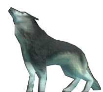

Gray Wolf
Jump to navigation
Jump to search
| Gray | |||||||||||||||||||
|---|---|---|---|---|---|---|---|---|---|---|---|---|---|---|---|---|---|---|---|
 | |||||||||||||||||||
| Release | 6 November 2024 (Update) | ||||||||||||||||||
| Episode | Hopeforest | ||||||||||||||||||
| Premium | No | ||||||||||||||||||
| Variant of | Wolf | ||||||||||||||||||
| Foe pack | Hopeforest foe pack 1 | ||||||||||||||||||
| Description | Definitely big and bad. | ||||||||||||||||||
{kind=link}
Gray Wolf is a variant appearance of a Wolf that appears in Hopeforest foe pack 1. The name and appearance of the variants within foe packs do not affect the experience or rewards from combat, instead these properties are only dependent on the milestone at which they are fought. For all details about combat, see the main page on Wolves.
Locations
[edit | edit source]| Location | Episode | Quantity |
|---|---|---|
| Wolves' Den | Hopeforest | 4 |
Update history
[edit | edit source]This information has been manually compiled. Some updates may not be included yet.
| Core concepts | |
|---|---|
| Monsters | |
| Active | |
|---|---|
| Passive | |
| Foe Packs | |
| Quest | |